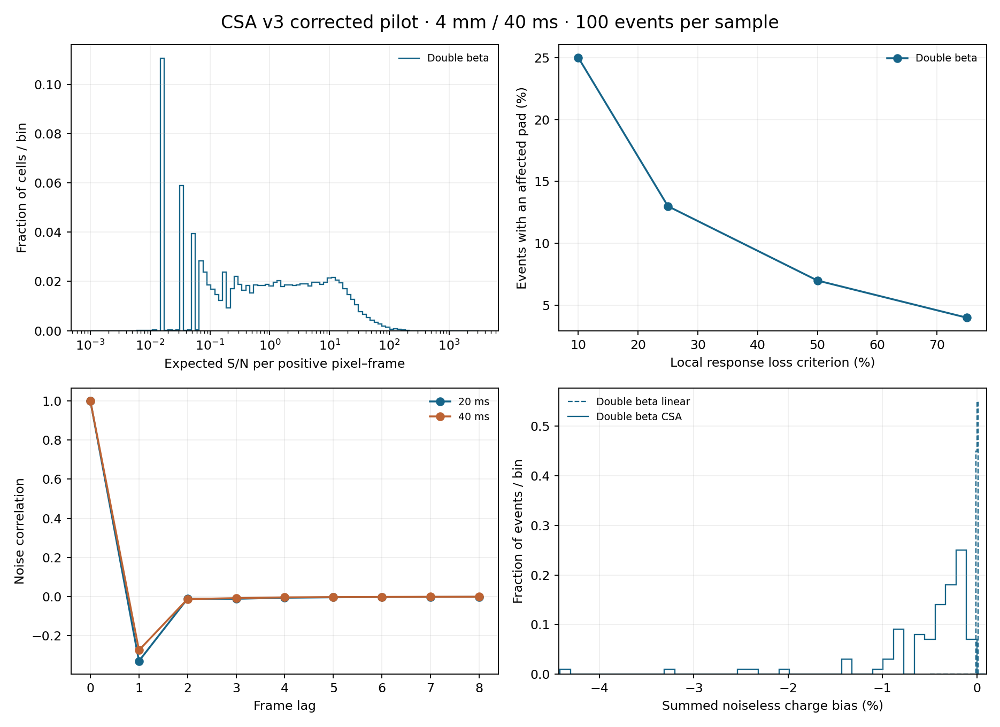

Timing correction: This execution reused a filtered-response file. Its elapsed time is not a fresh-output scaling measurement. The separate fresh-output scaling report measures event processing after warm-up and separates covariance calibration and presentation. Fresh-output scaling report.
Complete workflow: 28.46 s. bb0nu, 4 mm pitch, 40 ms frames; mode: production.
342 nonlinear pad histories, 0 SPICE histories, zero repeated SPICE controls. Charge ledger: 11,220,599 ions. Numerical consistency checks passed.
| Stage | Seconds |
|---|---|
| Input preparation and linear predictions | 10.34 |
| Nonlinear evaluation and storage | 1.94 |
| Response, noise and summary | 3.54 |
| Three-frame correction and summary | 2.38 |
| Numerical branch total | 18.30 |
| Presentation | 1.00 |
| Complete workflow, including module loading and publication | 28.46 |
Numerical and complete totals include the preceding stages. The complete timer starts before module loading and includes reconstruction, presentation and publication. The stages run in one Julia process.
mode = "production" reuses the validated calibration; SPICE serves domain fallback.
mode = "validation" additionally generates SPICE controls and solver refinements.
Card: config/specs/runs/ion_csa_nonlinear_production_100.toml.
PDF report · Interactive response diagnostics · Earlier validation report
